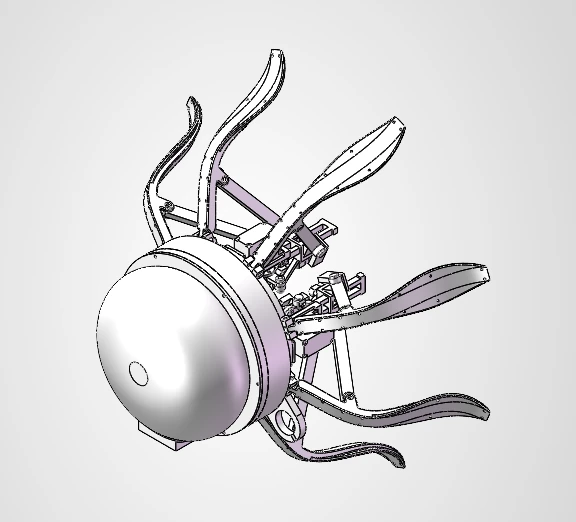
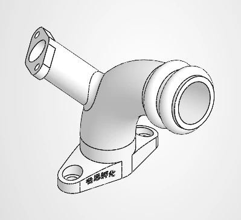
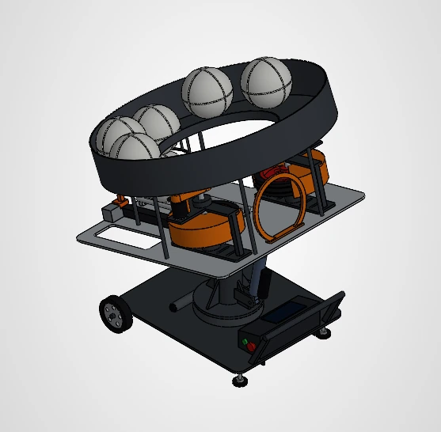
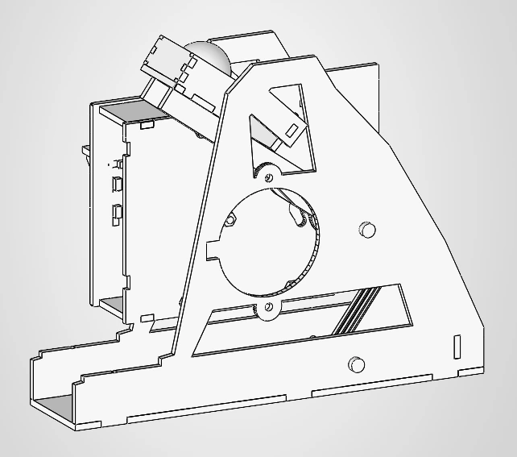
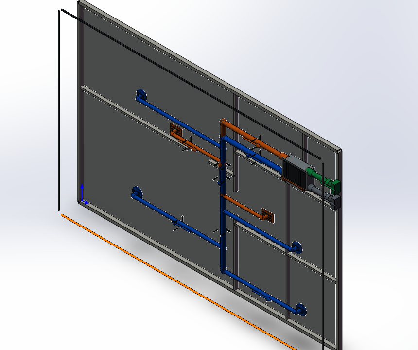
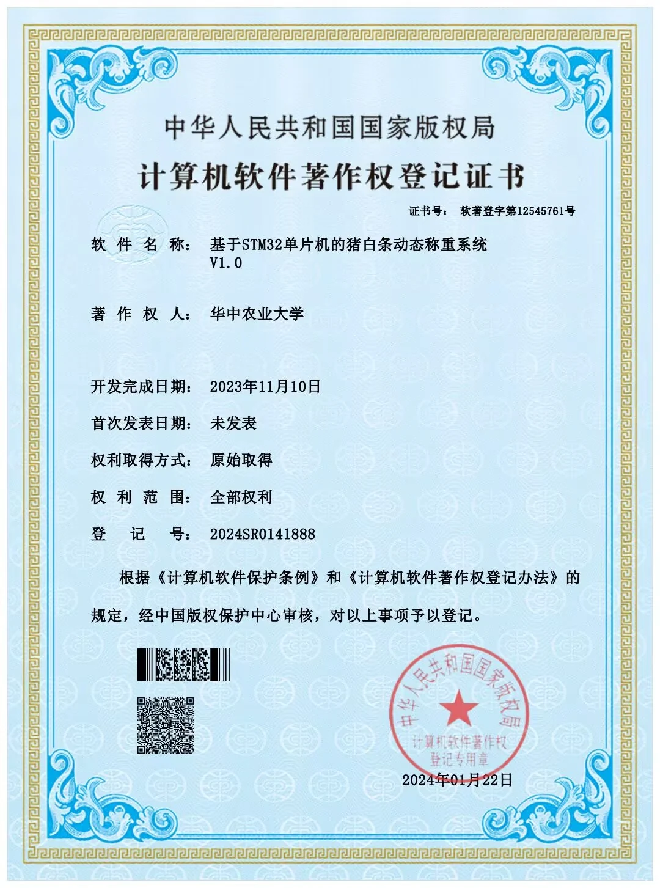
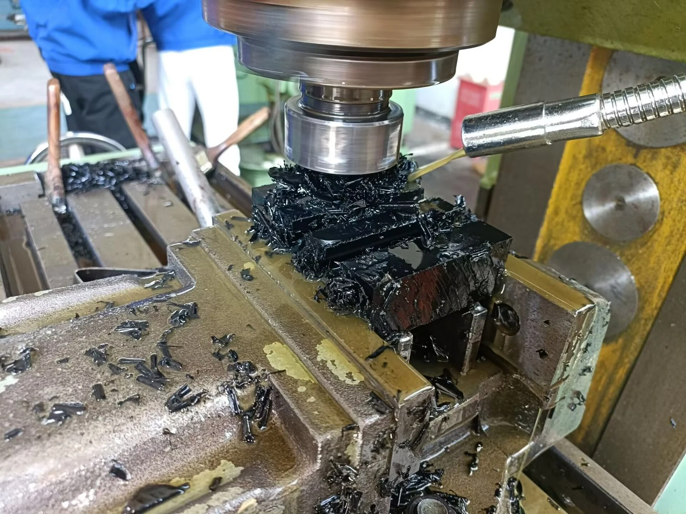
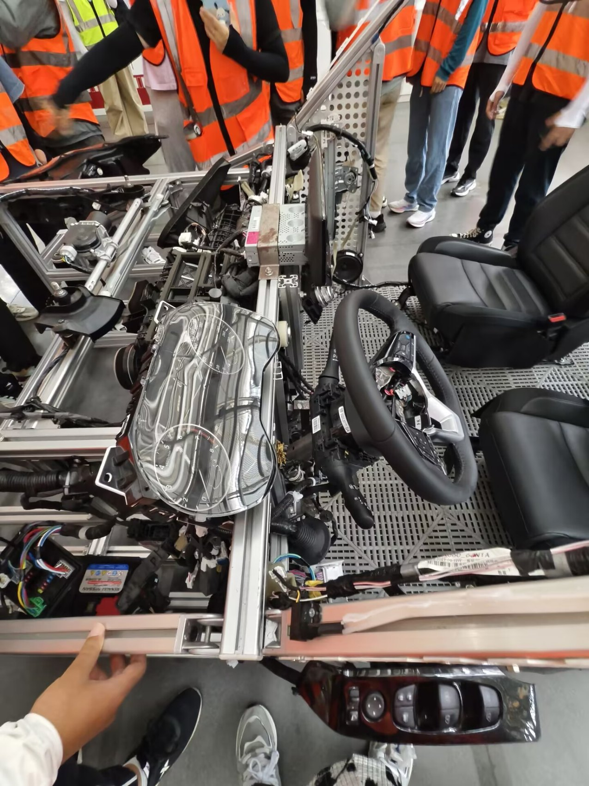
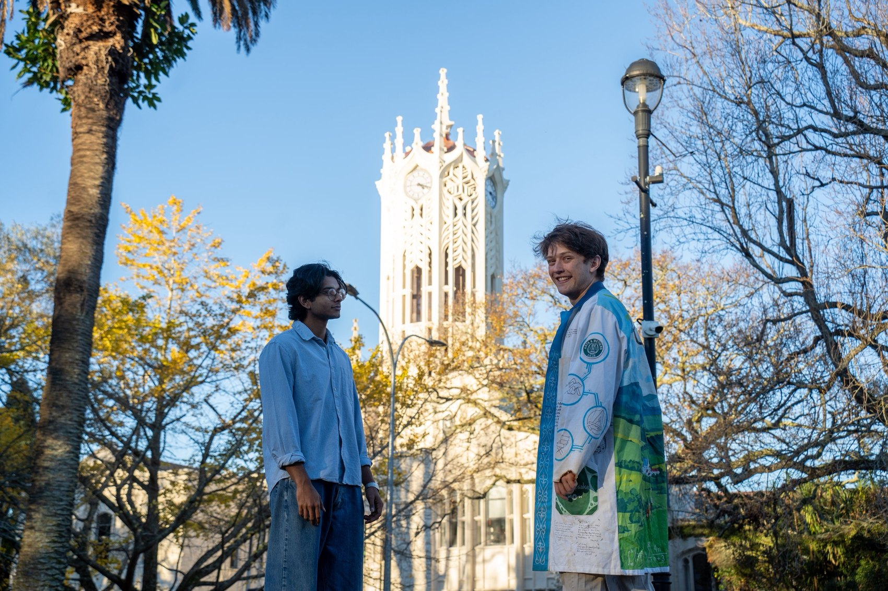

Ricardo Xie · Engineering portfolio
Project catalogue
CAD models, built prototypes, simulation studies and practical engineering work.
15 projects
No projects found
Try a shorter search or choose a different category.
-

University of Auckland · Research prototype
Energy-Harvesting Backpack
Built and wired a suspended-load platform. The walking test averaged 55 mW at 4 km/h.
-

SolidWorks · Mechanism design
Biomimetic Jellyfish Mechanism
Eight radial blades, four servo linkages and revised guide brackets.
-

SolidWorks · Training assessment 2.1
Flanged Three-Way Fitting
A training assessment model of a flanged three-way fitting, with blended branches and recessed lettering.
-

SolidWorks · Training assessment 2.2
Branched Pipe Elbow
A training assessment model of a curved three-way pipe with a side branch and flanged connections.
-

SolidWorks · Machine design
Football Launcher
A football training machine model with a ball feed, adjustable head and wheeled chassis.
-

SolidWorks · Laser-cut prototype
Motorised Desktop Catapult
V5 motorised plywood mechanism, with a workshop video and downloadable model.

-

Revit MEP · Building services
NZ Home Ventilation with Heat Recovery
Heat recovery, duct sizing and automated Revit modelling for a New Zealand home.
-

SolidWorks · Product design
Outdoor IoT Sensor Enclosure
An enclosure study integrating electronics, fasteners and mounting features.
-

ANSYS Fluent · Thermal and airflow analysis
Solar Chimney CFD
Conjugate heat transfer, a three-mesh independence study and a benchmark check.
-

Abaqus · Structural analysis
Composite Front Wing FEA
74% peak stress utilisation in the governing load case at a final wing mass of 1.17 kg.
-

STM32 · Embedded instrumentation
Dynamic Pig-Carcass Weighing System
An embedded load-cell system for weighing carcasses on a moving line.
-

CNC · Fabrication
Workshop Manufacturing
Machining, laser cutting and hands-on manufacturing practice.
-

Laboratory · Practical engineering
Lab and Automotive Engineering Practice
Mechanics testing, robotic-arm control and an automotive structure training day.
-
Volunteering · Community workshop
Auckland Library of Tools
Explaining tools and helping people repair, share and make.
-

Photography · Team leadership
Photography and Media Leadership
Photography and editorial work for student organisations in Auckland and at Huazhong Agricultural University.